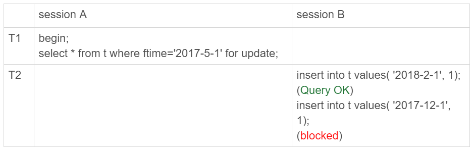
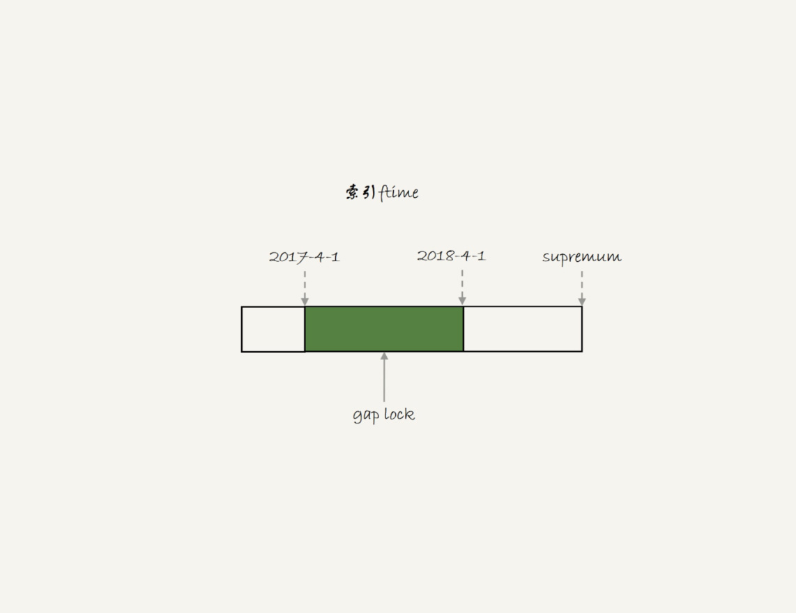
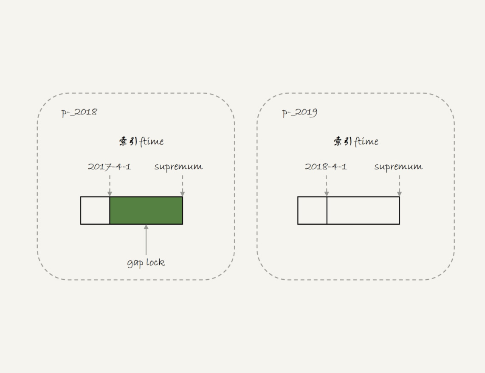
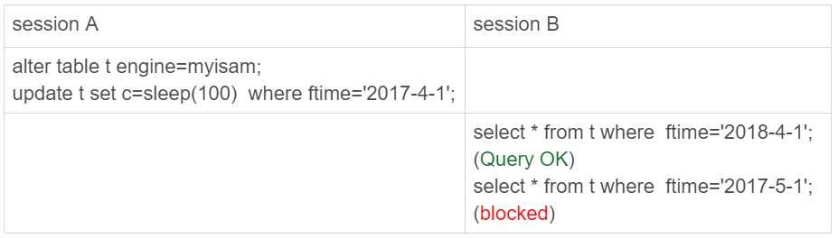
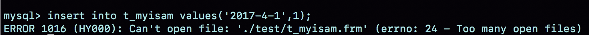
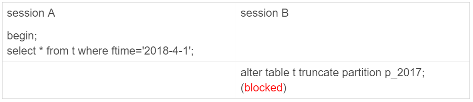
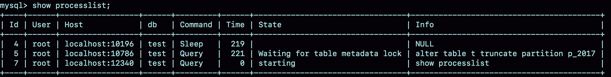

- 00 开篇词 这一次，让我们一起来搞懂MySQL.md.html
- 01 基础架构：一条SQL查询语句是如何执行的？.md.html
- 02 日志系统：一条SQL更新语句是如何执行的？.md.html
- 03 事务隔离：为什么你改了我还看不见？.md.html
- 04 深入浅出索引（上）.md.html
- 05 深入浅出索引（下）.md.html
- 06 全局锁和表锁 ：给表加个字段怎么有这么多阻碍？.md.html
- 07 行锁功过：怎么减少行锁对性能的影响？.md.html
- 08 事务到底是隔离的还是不隔离的？.md.html
- 09 普通索引和唯一索引，应该怎么选择？.md.html
- 10 MySQL为什么有时候会选错索引？.md.html
- 11 怎么给字符串字段加索引？.md.html
- 12 为什么我的MySQL会“抖”一下？.md.html
- 13 为什么表数据删掉一半，表文件大小不变？.md.html
- 14 count()这么慢，我该怎么办？.md.html
- 15 答疑文章（一）：日志和索引相关问题.md.html
- 16 “order by”是怎么工作的？.md.html
- 17 如何正确地显示随机消息？.md.html
- 18 为什么这些SQL语句逻辑相同，性能却差异巨大？.md.html
- 19 为什么我只查一行的语句，也执行这么慢？.md.html
- 20 幻读是什么，幻读有什么问题？.md.html
- 21 为什么我只改一行的语句，锁这么多？.md.html
- 22 MySQL有哪些“饮鸩止渴”提高性能的方法？.md.html
- 23 MySQL是怎么保证数据不丢的？.md.html
- 24 MySQL是怎么保证主备一致的？.md.html
- 25 MySQL是怎么保证高可用的？.md.html
- 26 备库为什么会延迟好几个小时？.md.html
- 27 主库出问题了，从库怎么办？.md.html
- 28 读写分离有哪些坑？.md.html
- 29 如何判断一个数据库是不是出问题了？.md.html
- 30 答疑文章（二）：用动态的观点看加锁.md.html
- 31 误删数据后除了跑路，还能怎么办？.md.html
- 32 为什么还有kill不掉的语句？.md.html
- 33 我查这么多数据，会不会把数据库内存打爆？.md.html
- 34 到底可不可以使用join？.md.html
- 35 join语句怎么优化？.md.html
- 36 为什么临时表可以重名？.md.html
- 37 什么时候会使用内部临时表？.md.html
- 38 都说InnoDB好，那还要不要使用Memory引擎？.md.html
- 39 自增主键为什么不是连续的？.md.html
- 40 insert语句的锁为什么这么多？.md.html
- 41 怎么最快地复制一张表？.md.html
- 42 grant之后要跟着flush privileges吗？.md.html
- 43 要不要使用分区表？.md.html
- 44 答疑文章（三）：说一说这些好问题.md.html
- 45 自增id用完怎么办？.md.html
- 我的MySQL心路历程.md.html
- 结束语 点线网面，一起构建MySQL知识网络.md.html
43 要不要使用分区表？
我经常被问到这样一个问题：分区表有什么问题，为什么公司规范不让使用分区表呢？今天，我们就来聊聊分区表的使用行为，然后再一起回答这个问题。
分区表是什么？
为了说明分区表的组织形式，我先创建一个表 t：
CREATE TABLE `t` (
`ftime` datetime NOT NULL,
`c` int(11) DEFAULT NULL,
KEY (`ftime`)
) ENGINE=InnoDB DEFAULT CHARSET=latin1
PARTITION BY RANGE (YEAR(ftime))
(PARTITION p_2017 VALUES LESS THAN (2017) ENGINE = InnoDB,
PARTITION p_2018 VALUES LESS THAN (2018) ENGINE = InnoDB,
PARTITION p_2019 VALUES LESS THAN (2019) ENGINE = InnoDB,
PARTITION p_others VALUES LESS THAN MAXVALUE ENGINE = InnoDB);
insert into t values('2017-4-1',1),('2018-4-1',1);
图 1 表 t 的磁盘文件
我在表 t 中初始化插入了两行记录，按照定义的分区规则，这两行记录分别落在 p_2018 和 p_2019 这两个分区上。
可以看到，这个表包含了一个.frm 文件和 4 个.ibd 文件，每个分区对应一个.ibd 文件。也就是说：
- 对于引擎层来说，这是 4 个表；
- 对于 Server 层来说，这是 1 个表。
你可能会觉得这两句都是废话。其实不然，这两句话非常重要，可以帮我们理解分区表的执行逻辑。
分区表的引擎层行为
我先给你举个在分区表加间隙锁的例子，目的是说明对于 InnoDB 来说，这是 4 个表。

图 2 分区表间隙锁示例
这里顺便复习一下，我在[第 21 篇文章]和你介绍的间隙锁加锁规则。
我们初始化表 t 的时候，只插入了两行数据， ftime 的值分别是，‘2017-4-1’ 和’2018-4-1’ 。session A 的 select 语句对索引 ftime 上这两个记录之间的间隙加了锁。如果是一个普通表的话，那么 T1 时刻，在表 t 的 ftime 索引上，间隙和加锁状态应该是图 3 这样的。

图 3 普通表的加锁范围
也就是说，‘2017-4-1’ 和’2018-4-1’ 这两个记录之间的间隙是会被锁住的。那么，sesion B 的两条插入语句应该都要进入锁等待状态。
但是，从上面的实验效果可以看出，session B 的第一个 insert 语句是可以执行成功的。这是因为，对于引擎来说，p_2018 和 p_2019 是两个不同的表，也就是说 2017-4-1 的下一个记录并不是 2018-4-1，而是 p_2018 分区的 supremum。所以 T1 时刻，在表 t 的 ftime 索引上，间隙和加锁的状态其实是图 4 这样的：

图 4 分区表 t 的加锁范围
由于分区表的规则，session A 的 select 语句其实只操作了分区 p_2018，因此加锁范围就是图 4 中深绿色的部分。
所以，session B 要写入一行 ftime 是 2018-2-1 的时候是可以成功的，而要写入 2017-12-1 这个记录，就要等 session A 的间隙锁。
图 5 就是这时候的 show engine innodb status 的部分结果。

图 5 session B 被锁住信息
看完 InnoDB 引擎的例子，我们再来一个 MyISAM 分区表的例子。
我首先用 alter table t engine=myisam，把表 t 改成 MyISAM 表；然后，我再用下面这个例子说明，对于 MyISAM 引擎来说，这是 4 个表。

图 6 用 MyISAM 表锁验证
在 session A 里面，我用 sleep(100) 将这条语句的执行时间设置为 100 秒。由于 MyISAM 引擎只支持表锁，所以这条 update 语句会锁住整个表 t 上的读。
但我们看到的结果是，session B 的第一条查询语句是可以正常执行的，第二条语句才进入锁等待状态。
这正是因为 MyISAM 的表锁是在引擎层实现的，session A 加的表锁，其实是锁在分区 p_2018 上。因此，只会堵住在这个分区上执行的查询，落到其他分区的查询是不受影响的。
看到这里，你可能会说，分区表看来还不错嘛，为什么不让用呢？我们使用分区表的一个重要原因就是单表过大。那么，如果不使用分区表的话，我们就是要使用手动分表的方式。
接下来，我们一起看看手动分表和分区表有什么区别。
比如，按照年份来划分，我们就分别创建普通表 t_2017、t_2018、t_2019 等等。手工分表的逻辑，也是找到需要更新的所有分表，然后依次执行更新。在性能上，这和分区表并没有实质的差别。
分区表和手工分表，一个是由 server 层来决定使用哪个分区，一个是由应用层代码来决定使用哪个分表。因此，从引擎层看，这两种方式也是没有差别的。
其实这两个方案的区别，主要是在 server 层上。从 server 层看，我们就不得不提到分区表一个被广为诟病的问题：打开表的行为。
分区策略
每当第一次访问一个分区表的时候，MySQL 需要把所有的分区都访问一遍。一个典型的报错情况是这样的：如果一个分区表的分区很多，比如超过了 1000 个，而 MySQL 启动的时候，open_files_limit 参数使用的是默认值 1024，那么就会在访问这个表的时候，由于需要打开所有的文件，导致打开表文件的个数超过了上限而报错。
下图就是我创建的一个包含了很多分区的表 t_myisam，执行一条插入语句后报错的情况。

图 7 insert 语句报错
可以看到，这条 insert 语句，明显只需要访问一个分区，但语句却无法执行。
这时，你一定从表名猜到了，这个表我用的是 MyISAM 引擎。是的，因为使用 InnoDB 引擎的话，并不会出现这个问题。
MyISAM 分区表使用的分区策略，我们称为通用分区策略（generic partitioning），每次访问分区都由 server 层控制。通用分区策略，是 MySQL 一开始支持分区表的时候就存在的代码，在文件管理、表管理的实现上很粗糙，因此有比较严重的性能问题。
从 MySQL 5.7.9 开始，InnoDB 引擎引入了本地分区策略（native partitioning）。这个策略是在 InnoDB 内部自己管理打开分区的行为。
MySQL 从 5.7.17 开始，将 MyISAM 分区表标记为即将弃用 (deprecated)，意思是“从这个版本开始不建议这么使用，请使用替代方案。在将来的版本中会废弃这个功能”。
从 MySQL 8.0 版本开始，就不允许创建 MyISAM 分区表了，只允许创建已经实现了本地分区策略的引擎。目前来看，只有 InnoDB 和 NDB 这两个引擎支持了本地分区策略。
接下来，我们再看一下分区表在 server 层的行为。
分区表的 server 层行为
如果从 server 层看的话，一个分区表就只是一个表。
这句话是什么意思呢？接下来，我就用下面这个例子来和你说明。如图 8 和图 9 所示，分别是这个例子的操作序列和执行结果图。

图 8 分区表的 MDL 锁

图 9 show processlist 结果
可以看到，虽然 session B 只需要操作 p_2107 这个分区，但是由于 session A 持有整个表 t 的 MDL 锁，就导致了 session B 的 alter 语句被堵住。
这也是 DBA 同学经常说的，分区表，在做 DDL 的时候，影响会更大。如果你使用的是普通分表，那么当你在 truncate 一个分表的时候，肯定不会跟另外一个分表上的查询语句，出现 MDL 锁冲突。
到这里我们小结一下：
- MySQL 在第一次打开分区表的时候，需要访问所有的分区；
- 在 server 层，认为这是同一张表，因此所有分区共用同一个 MDL 锁；
- 在引擎层，认为这是不同的表，因此 MDL 锁之后的执行过程，会根据分区表规则，只访问必要的分区。
而关于“必要的分区”的判断，就是根据 SQL 语句中的 where 条件，结合分区规则来实现的。比如我们上面的例子中，where ftime=‘2018-4-1’，根据分区规则 year 函数算出来的值是 2018，那么就会落在 p_2019 这个分区。
但是，如果这个 where 条件改成 where ftime>=‘2018-4-1’，虽然查询结果相同，但是这时候根据 where 条件，就要访问 p_2019 和 p_others 这两个分区。
如果查询语句的 where 条件中没有分区 key，那就只能访问所有分区了。当然，这并不是分区表的问题。即使是使用业务分表的方式，where 条件中没有使用分表的 key，也必须访问所有的分表。
我们已经理解了分区表的概念，那么什么场景下适合使用分区表呢？
分区表的应用场景
分区表的一个显而易见的优势是对业务透明，相对于用户分表来说，使用分区表的业务代码更简洁。还有，分区表可以很方便的清理历史数据。
如果一项业务跑的时间足够长，往往就会有根据时间删除历史数据的需求。这时候，按照时间分区的分区表，就可以直接通过 alter table t drop partition …这个语法删掉分区，从而删掉过期的历史数据。
这个 alter table t drop partition …操作是直接删除分区文件，效果跟 drop 普通表类似。与使用 delete 语句删除数据相比，优势是速度快、对系统影响小。
小结
这篇文章，我主要和你介绍的是 server 层和引擎层对分区表的处理方式。我希望通过这些介绍，你能够对是否选择使用分区表，有更清晰的想法。
需要注意的是，我是以范围分区（range）为例和你介绍的。实际上，MySQL 还支持 hash 分区、list 分区等分区方法。你可以在需要用到的时候，再翻翻手册。
实际使用时，分区表跟用户分表比起来，有两个绕不开的问题：一个是第一次访问的时候需要访问所有分区，另一个是共用 MDL 锁。
因此，如果要使用分区表，就不要创建太多的分区。我见过一个用户做了按天分区策略，然后预先创建了 10 年的分区。这种情况下，访问分区表的性能自然是不好的。这里有两个问题需要注意：
- 分区并不是越细越好。实际上，单表或者单分区的数据一千万行，只要没有特别大的索引，对于现在的硬件能力来说都已经是小表了。
- 分区也不要提前预留太多，在使用之前预先创建即可。比如，如果是按月分区，每年年底时再把下一年度的 12 个新分区创建上即可。对于没有数据的历史分区，要及时的 drop 掉。
至于分区表的其他问题，比如查询需要跨多个分区取数据，查询性能就会比较慢，基本上就不是分区表本身的问题，而是数据量的问题或者说是使用方式的问题了。
当然，如果你的团队已经维护了成熟的分库分表中间件，用业务分表，对业务开发同学没有额外的复杂性，对 DBA 也更直观，自然是更好的。
最后，我给你留下一个思考题吧。
我们举例的表中没有用到自增主键，假设现在要创建一个自增字段 id。MySQL 要求分区表中的主键必须包含分区字段。如果要在表 t 的基础上做修改，你会怎么定义这个表的主键呢？为什么这么定义呢？
你可以把你的结论和分析写在留言区，我会在下一篇文章的末尾和你讨论这个问题。感谢你的收听，也欢迎你把这篇文章分享给更多的朋友一起阅读。
上期问题时间
上篇文章后面还不够多，可能很多同学还没来记得看吧，我们就等后续有更多留言的时候，再补充本期的“上期问题时间”吧。
@夹心面包 提到了在 grant 的时候是支持通配符的："_"表示一个任意字符，“%”表示任意字符串。这个技巧在一个分库分表方案里面，同一个分库上有多个 db 的时候，是挺方便的。不过我个人认为，权限赋值的时候，控制的精确性还是要优先考虑的。